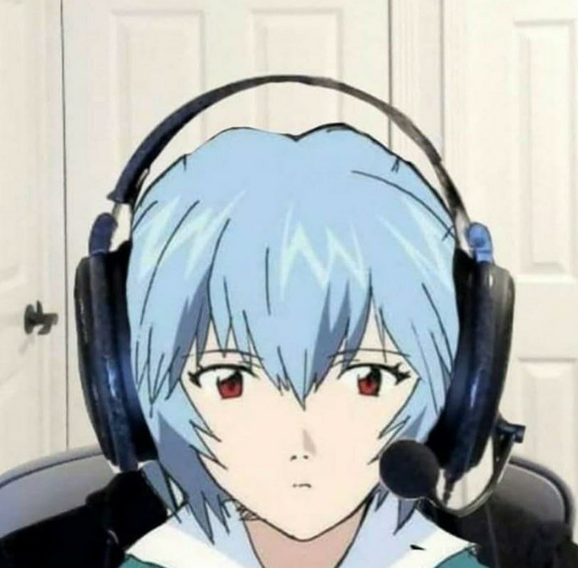
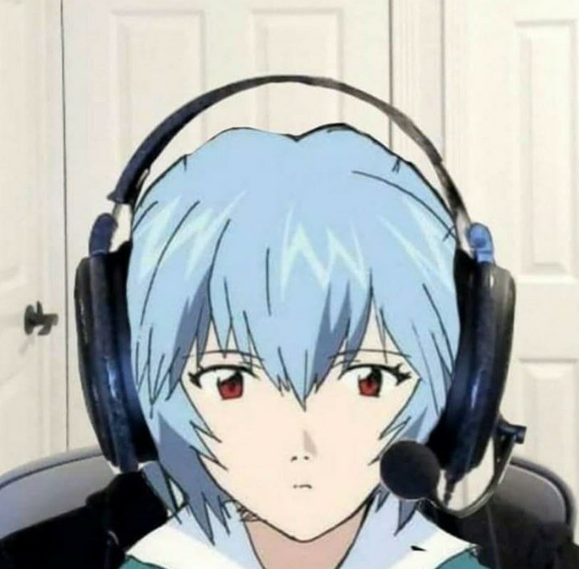

EVA Units
The 3 main EVA units used and showed in the anime
EVA Unit 00 is the first successful EVA unit created and serves as a protoype for all of the other EVA units.

EVA Unit 01 is the most "successful" and interesting eva unit, having gone berserk more than once.
EVA Unit 02 is the 3rd Unit to appear in the series.
This show, of course, focuses on the EVAs fighting the Angles, but it also shows the psychological aspect, the thoughts, feelings, and trauma the characters go through. The "main character," Shinji, is a mc you might say, is different from all the male anime mcs there.

 
